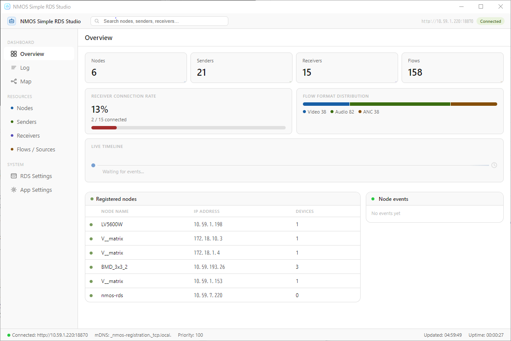

NMOS Simple RDS Studio
Portable IS-04 Registry + Live Dashboard
Portable IS-04 Registry + Live Dashboard
Overview
NMOS Simple RDS Studio is a single portable .exe that runs a full AMWA IS-04 Registration & Discovery System right on your Windows PC. It bundles sony/nmos-cpp — a production-grade IS-04 registry — together with a real-time monitoring dashboard built on Electron. No server setup, no configuration files, no installation: download, double-click, and your NMOS network has an RDS.
Already running an RDS on your network? Connect to it as a read-only monitor instead — the splash screen auto-discovers registries via mDNS, one click to connect. Either way you get a live dashboard view of nodes, senders, receivers, flows, and connection maps, without ever reading raw JSON.
Features

Quick Start
Download the .exe
Grab the latest portable .exe from the GitHub Releases page. No installation required — Windows x64 (ARM64 runs it via the built-in x64 emulation layer).
Launch and pick a mode
Double-click to start, then choose "Launch" to start a new RDS, or "Monitor" to connect to one already running on your network.
(Launch mode) Configure the network
Set the network interface, port, domain, and priority in the wizard. On first launch, Windows shows a firewall prompt — check both Private and Public networks.
Monitor from the dashboard
Watch nodes, senders, receivers, and flows from Overview, visualize connections on the Map, and jump to any resource with Ctrl+K global search.